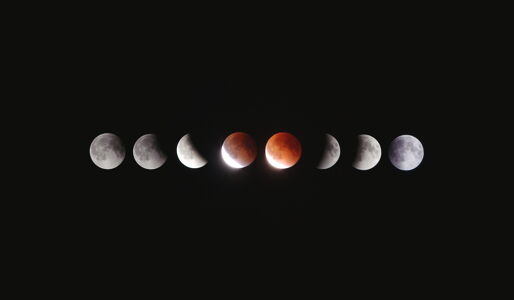
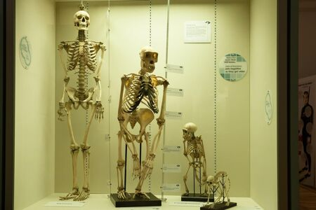
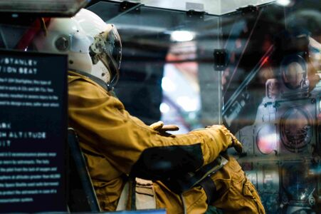
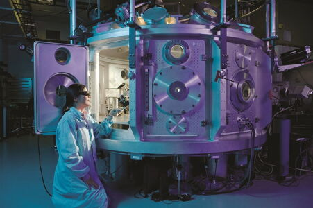

Exhibition Spaces
Cosmology

Explore the wonders of our cosmos. Our fantastic exhibition,
‘The Sky Above Us’, explores the night sky and what we can see
and know about the universe around us. We’ll locate the
various constellations and galaxies that can be seen and learn
a bit about the early navigators who used the stars to travel
by.
Follow the journey of our solar exploration: from early Arab
traders, to Galileo’s telescope, to the latest exploration of
the planets in our solar system.
Evolution

For centuries, philosophers and scientists have wrestled with
the question of our origins. Where do we come from and how did
we get here? Since Darwin proposed his theory of evolution we
have had a framework for exploring and understanding our place
in this world.
Discover the origins of life on this planet and how the
species we know today have evolved our time. You can also take
some time to meet a few of the creatures who didn’t survive,
including our Woolly Mammoth, the Dodos, and a number of
dinosaurs too.
Biology and Medicine

From micro-organisms to the human body, major breakthroughs in
biology are offering us unique insights into the great wonders
of the tiny world.
For many people their life expectancy is much longer and their
quality of life much improved, thanks to the growth of our
understanding of medicine. Over a series of exhibits we
explore the history of medicine and take a look at some major
breakthroughs including the discovery of penicillin and the
first heart transplant.
Many of our great medicinal discoveries have come not only
from the lab, but also from observing animals in the wild.
Often our fellow creatures have beat us to it.
Robotics and AI
The information revolution is here and robotics and artificial
intelligence are the science of the future. From useful home
applications of AI to industrial uses of robotics, the future is
here. You can even say hello and shake the hand of Rob the
Robot.
Ecology

As we learn more and more of the impact humans are having on
the planet, the more important it becomes that scientists
explore how to create a sustainable future not just for
humans but for the whole planet.
In our ecology section of the museum, we unpack the dangers
we currently face including global warming, extinction of
species, and pollution. But we also focus on the positive
ways we can all contribute to a brighter future.